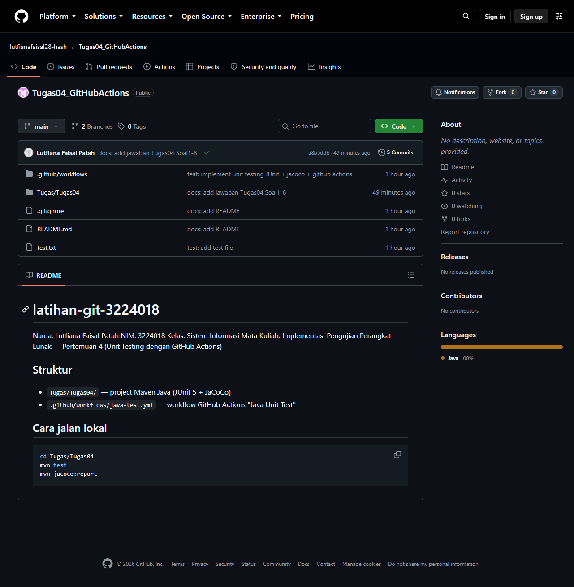
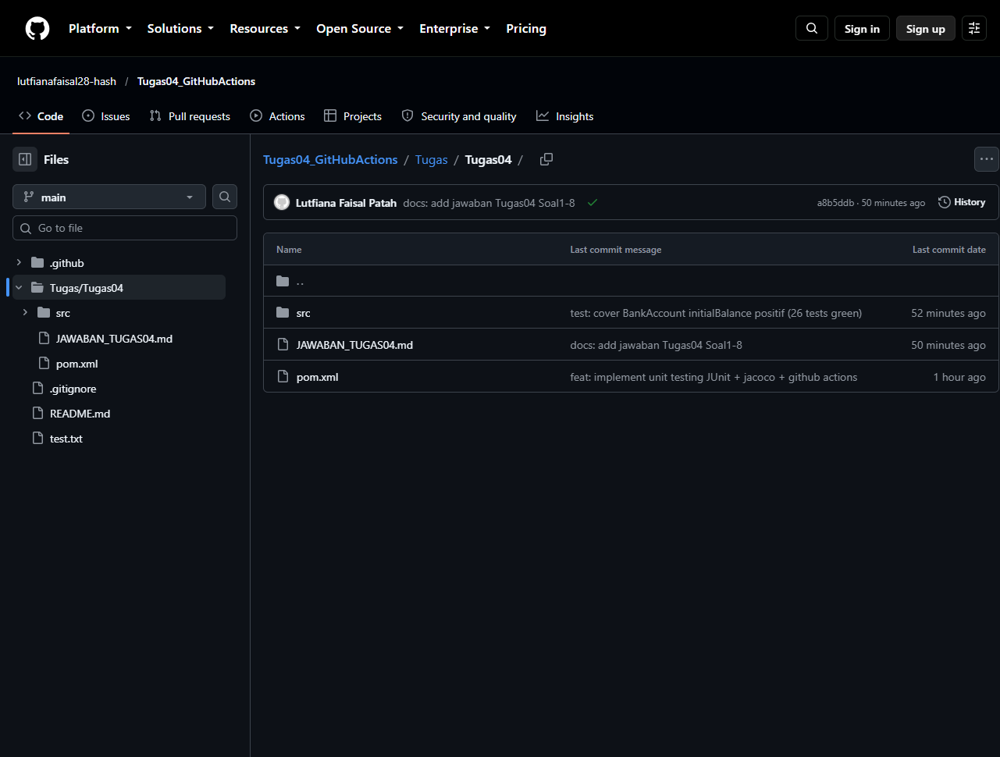
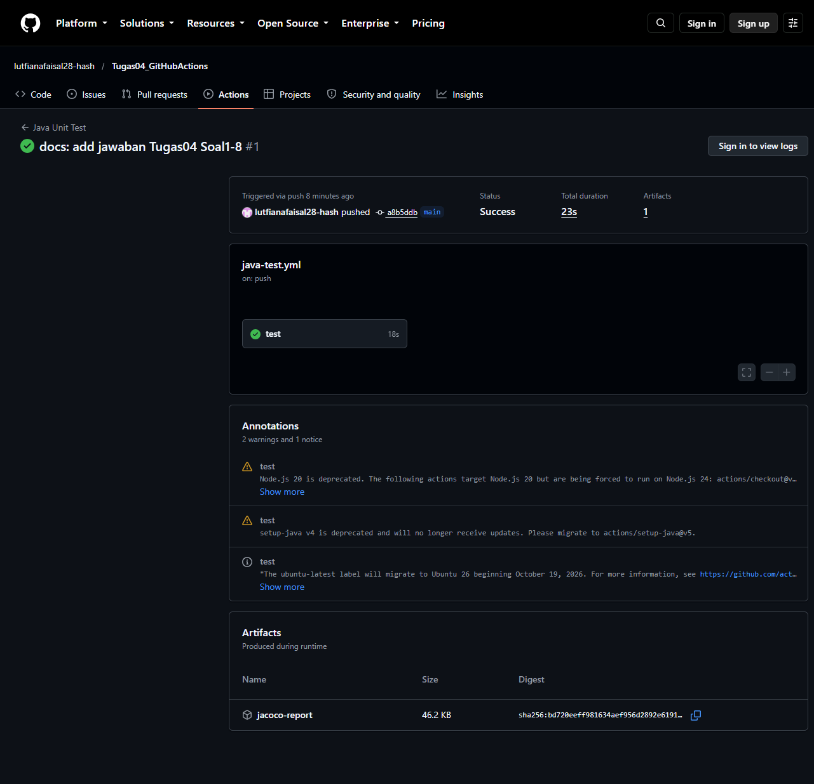
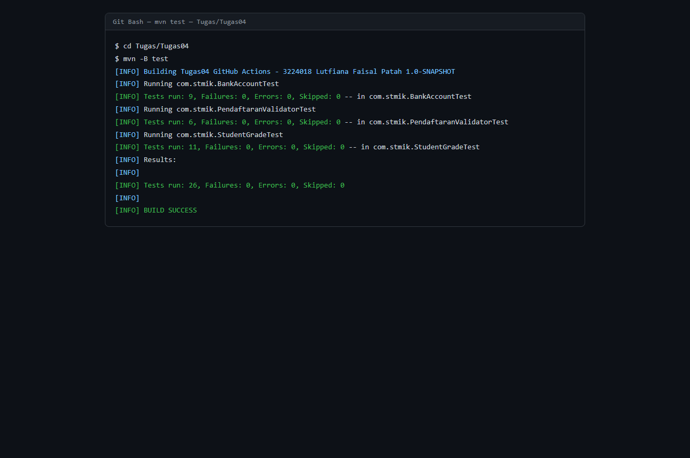
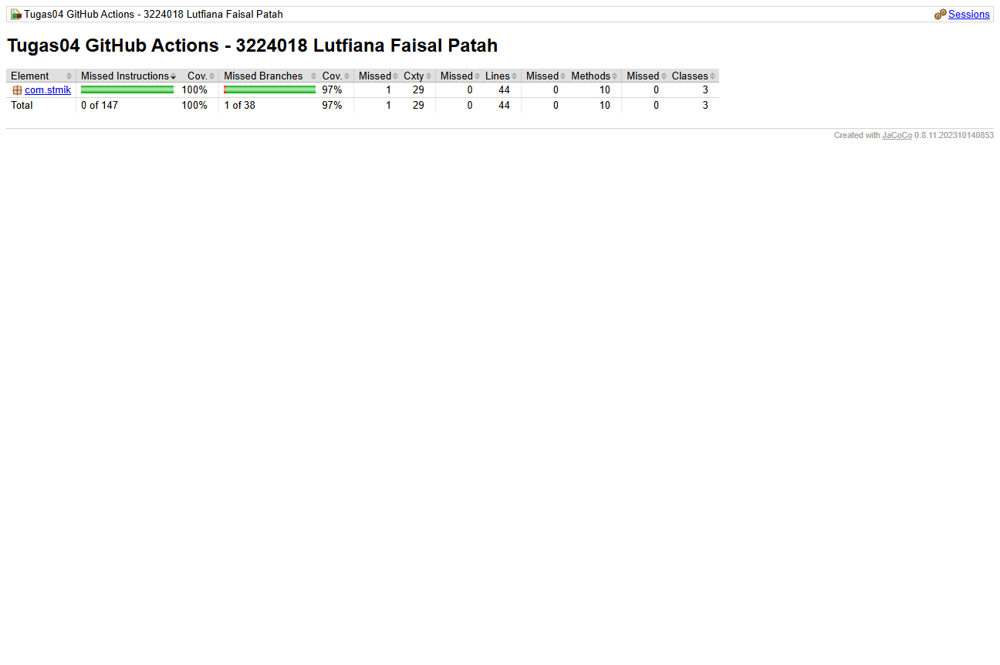

| Nama | Lutfiana Faisal Patah |
| NIM | 3224018 |
| Kelas | Sistem Informasi |
| Tanggal | 9 Oktober 2026 |
| Repository | https://github.com/lutfianafaisal28-hash/Tugas04_GitHubActions |
1. Centralized VCS vs Distributed VCS. Centralized VCS menyimpan seluruh versi/history pada satu server pusat; client hanya memiliki working copy dan harus terhubung ke server untuk commit maupun melihat history. Contoh: SVN (Apache Subversion) dan CVS. Distributed VCS memberi setiap developer salinan lengkap repository beserta history-nya, sehingga commit, branch, dan merge bisa dilakukan offline lalu disinkronkan via push/pull; tidak ada single point of failure dan branching jauh lebih ringan. Contoh: Git dan Mercurial.
2. Lima Git command wajib beserta fungsinya:
git clone <url> — menyalin remote repository ke lokal.git add . — memasukkan file ke staging area.git commit -m "pesan" — menyimpan snapshot staging ke history lokal.git push origin main — mengirim commit lokal ke remote repository.git pull origin main — mengambil dan menggabungkan perubahan remote ke lokal.Perintah pendukung yang juga dipakai: git branch, git checkout, git merge, git log --oneline, git status.
3. Fungsi .gitignore. File teks berisi pola path yang harus diabaikan Git agar tidak di-track/commit, misalnya hasil build (target/), file IDE (.idea/, .vscode/, *.iml), file OS (.DS_Store, Thumbs.db), dan file coverage (*.exec).
git clone https://github.com/lutfianafaisal28-hash/Tugas04_GitHubActions.git cd Tugas04_GitHubActions # isi README.md dengan nama + NIM git add README.md .gitignore git commit -m "docs: add README" git push -u origin main git branch feature-test git checkout feature-test echo "file test untuk praktik branch feature-test" > test.txt git add test.txt git commit -m "test: add test file" git push -u origin feature-test git checkout main git merge feature-test git push origin main
History commit: docs: add README → test: add test file (branch feature-test, di-merge ke main) → feat: implement unit testing → docs: add jawaban.
| # | Input (nama, umur, email, setuju) | Expected |
|---|---|---|
| P1 | "", 20, "user@mail.com", true (dan null) | Nama harus diisi |
| P2 | "Budi", 15, "budi@mail.com", true | Umur minimal 17 tahun |
| P3 | "Budi", 20, "budimail.com", true | Email tidak valid |
| P5 | "Budi", 20, "budi@mail.com", false | Harus menyetujui syarat dan ketentuan |
| P-ok | "Budi", 20, "budi@mail.com", true | Pendaftaran berhasil |
Implementasi JUnit: Tugas/Tugas04/src/test/java/com/stmik/PendaftaranValidatorTest.java (6 method @Test, termasuk kasus nama null). Pola Arrange-Act-Assert; setup objek via @BeforeEach.
1. Cyclomatic Complexity calculateGrade(). Node predikat: score<0 || score>100 (1 if + 1 operator || = 2), score>=80, >=70, >=60, >=50 (4) → total keputusan = 6 → V(G) = 6 + 1 = 7. (Catatan: materi slide menghitung || sebagai satu sehingga menyebut 6; perhitungan ketat dengan operator logika memberi 7. Jumlah test case minimal mengikuti V(G).)
2. Independent Path: (1) skor invalid → throw IllegalArgumentException; (2) ≥80 → "A"; (3) 70–79 → "B"; (4) 60–69 → "C"; (5) 50–59 → "D"; (6) 0–49 → "E".
3. JUnit: StudentGradeTest.java — 7 test calculateGrade (2 invalid + A/B/C/D/E) + 4 test isPassed (lulus 70, batas 60, tidak lulus 50, invalid -1/120). Verifikasi: assertEquals, assertTrue/False, assertThrows.
1. Nama workflow: Python CI. 2. Trigger: push ke branch main dan develop, serta pull_request ke main. 3. Fungsi strategy matrix (python-version: ['3.10','3.11','3.12']): menjalankan job test secara paralel tiga kali, masing-masing dengan satu versi Python, untuk memastikan kompatibilitas lintas versi. 4. Steps: perlu dikoreksi — YAML yang diberikan hanya memuat 4 steps, bukan 5: (1) Checkout code (actions/checkout@v4), (2) Setup Python sesuai matrix (actions/setup-python@v5), (3) Install dependencies (pip install pytest pytest-cov), (4) Run tests (pytest --cov=src --cov-report=xml). Terdapat ketidaksesuaian antara soal (meminta 5) dan isi YAML (4).
.github/workflows/java-test.yml)name: Java Unit Test
on:
push:
branches: [main, develop]
pull_request:
branches: [main]
jobs:
test:
runs-on: ubuntu-latest
defaults:
run:
working-directory: Tugas/Tugas04
steps:
- name: Checkout code
uses: actions/checkout@v4
- name: Setup JDK 17
uses: actions/setup-java@v4
with:
java-version: '17'
distribution: 'temurin'
cache: maven
- name: Run tests dengan mvn test
run: mvn -B test
- name: Generate coverage report dengan mvn jacoco:report
run: mvn -B jacoco:report
- name: Upload artifact dengan nama "jacoco-report"
uses: actions/upload-artifact@v4
with:
name: jacoco-report
path: Tugas/Tugas04/target/site/jacoco/
Catatan: working-directory dipakai karena project Maven berada di Tugas/Tugas04 sesuai format pengumpulan.
1. Total statement = 10 + 15 + 20 + 5 = 50. 2. Total miss = 0 + 2 + 8 + 1 = 11. 3. Coverage terendah: src/payment.py, 60%. 4. Untuk payment.py: buka laporan HTML, identifikasi 8 baris/cabang yang miss, tambah test untuk branch if/else, exception, dan edge case pembayaran yang belum tersentuh, lalu jalankan ulang pytest --cov. 5. Coverage 78% belum cukup baik — target materi 80–90% line coverage; 78% di bawah ambang dan payment.py hanya 60% sehingga risiko bug tinggi. Perlu ditingkatkan minimal ≥80% (ideal ≥90% untuk modul kritis).
Hasil JaCoCo project ini (bukti di bawah): 100% instruction, 97% branch, 44/44 lines, 10/10 methods — di atas target.
Kelas com.stmik.BankAccount: deposit(amount), withdraw(amount), getBalance(); validasi: nominal harus positif, withdraw tidak boleh melebihi saldo, saldo awal tidak boleh negatif. Unit test (BankAccountTest.java) 9 test case: saldo awal nol, deposit berhasil, deposit negatif/nol ditolak, withdraw berhasil, withdraw melebihi saldo ditolak, withdraw negatif ditolak, konstruktor negatif ditolak, konstruktor positif berhasil. Workflow dan coverage memakai pipeline yang sama; hasil lokal 26/26 test hijau.
https://github.com/lutfianafaisal28-hash/Tugas04_GitHubActions
Gambar 1 — Repository GitHub.

Gambar 2 — Folder Tugas/Tugas04 di GitHub.

Gambar 3 — Pipeline GitHub Actions SUCCESS + artifact jacoco-report.

Gambar 4 — Hasil mvn test lokal (BUILD SUCCESS, 26 tests).

Gambar 5 — Coverage report JaCoCo lokal.
